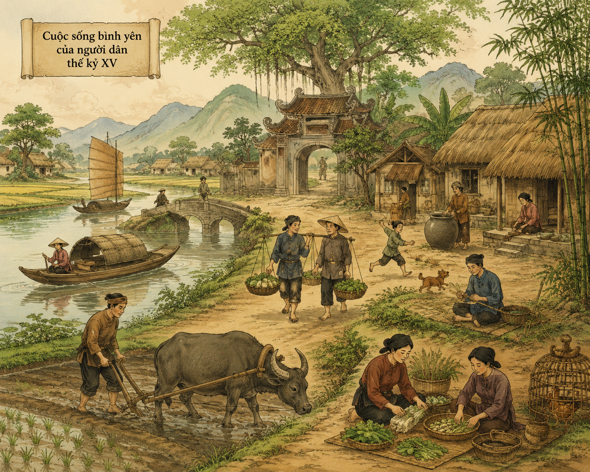
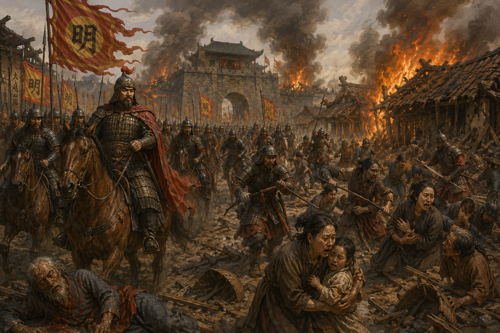

1. Từng nghe:
Ý nghĩa: Khẳng định tư tưởng nhân nghĩa gắn liền với yên dân, trừ bạo và xác lập chân lý về độc lập chủ quyền, lãnh thổ, văn hiến, phong tục, lịch sử riêng của dân tộc Đại Việt.

[Hình minh họa: h1.png]2. Vừa rồi:
Tội ác: Vạch trần âm mưu thâm độc, chính sách cai trị dã man hủy diệt cả nhân tính lẫn tự nhiên của giặc Minh.

[Hình minh họa: h2.png]3. Ta đây:
4. Bởi thế:
"Bình Ngô đại cáo" được sáng tác vào cuối năm 1427, ban bố đầu năm 1428 sau khi quét sạch giặc Minh, đánh dấu mốc son lịch sử chói lọi mở ra kỷ nguyên độc lập tự chủ.
Vận dụng nghệ thuật lập luận sắc bén, kết hợp nhuần nhuyễn giữa văn chính luận và cảm hứng sử thi để viết bài văn nghị luận xã hội về tinh thần độc lập dân tộc.
❓ Câu hỏi 1: Căn cứ vào đoạn 1, tư tưởng "nhân nghĩa" của Nguyễn Trãi được thể hiện qua những nội dung cơ bản nào?
Lời giải chi tiết: Tư tưởng nhân nghĩa trong tác phẩm gắn liền với hai nội dung cốt lõi:
🖐️ Hoạt động nêu vấn đề: Phân tích nghệ thuật lập luận và biểu cảm của tác giả khi tố cáo tội ác giặc Minh.
Hướng dẫn giải quyết:
Bài 1: Phân tích ý nghĩa của đoạn mở đầu Bình Ngô đại cáo trong việc xác lập nền độc lập chủ quyền dân tộc.
Lời giải chi tiết:
Bài 2: Làm rõ giá trị tố cáo hiện thực và cảm xúc căm hờn qua đoạn miêu tả tội ác giặc Minh.
Lời giải chi tiết:
Bài 3: Trình bày cảm nhận về hình tượng nghĩa quân Lam Sơn vượt qua gian khổ để đi đến thắng lợi cuối cùng.
Lời giải chi tiết: